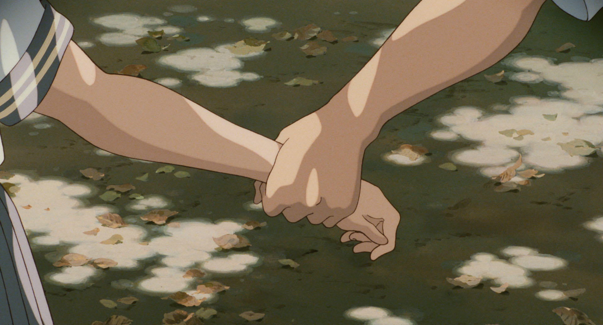
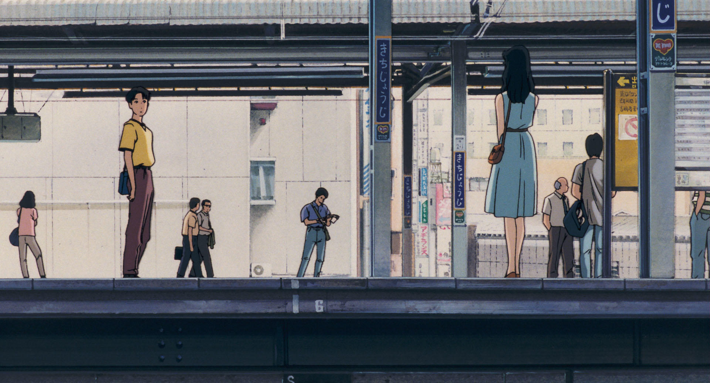

the chances of experiencing something as beautiful as life are
ten-to-one.
LOVE.
THE
UNSENT PROJECT is a collection and archive of
more than 5 million unsent text messages from anonymous people to their first loves.
however, i have also seen people use this for other romantic partners they may have had,
lost friends, and
other people they are no longer in contact with. you can see the messages people have left,
and if you are curious you can search your own name too. who knows, maybe someone you know
or used to
know may have written about you.


HUMANS OF NEW YORK began as a photography project
in 2010.
the initial goal was to photograph 10,000 new yorkers on the street, and create an
exhaustive catalogue of the city's inhabitants.
over the course of time, the photographers would listen to the stories their subjects would
tell, and ended up including them in
the description of their post. adding the stories of those photographed has skyrocketed the
humans of new york socials.
you can read the stories from the subjects of all different backgrounds. prepare to smile,
cry, laugh, and empathize.